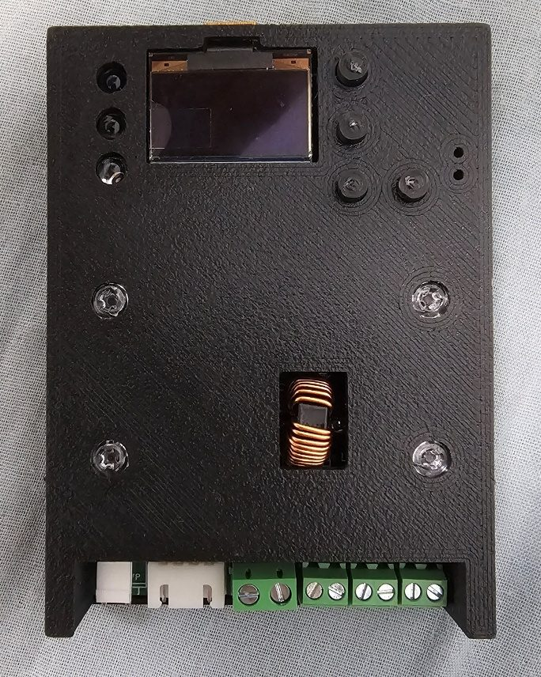
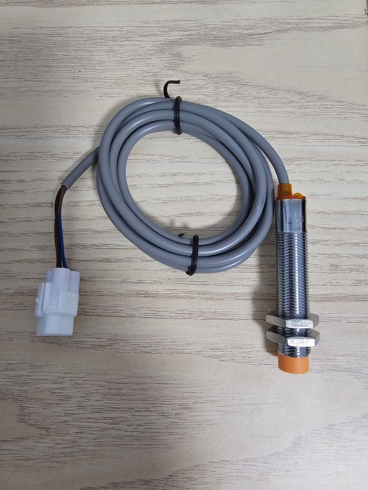
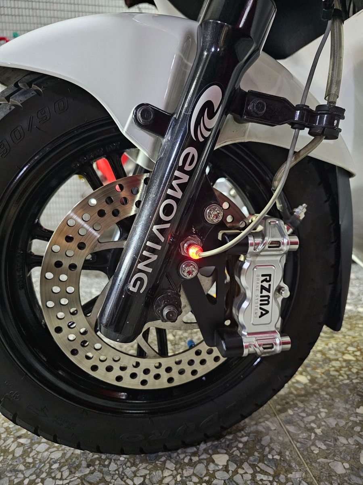

TES 快充控制板
這塊控制板是整套充電設備的「大腦」：它實作了車輛原本就在用的 TES-0D-02-01 快充通訊協定，透過 CAN Bus 跟車輛的電池管理系統（BMS）做正規的充電交握，再去指揮整流模組輸出。

搭配整流模組及副廠充電槍，就能透過車上原本的 TES 快充接口充電——包括轉接使用汽車的 AC 慢充樁（J1772 / Type 2）。充電槍需要自行向中國的廠商訂做，這部分我不提供。
- 控制器設計上限：120 V / 100 A
- 手機開網頁就能看：即時電壓、電流、目前電量（SOC）、預估剩餘時間
- 可設定充到幾 % 就停、最大電壓電流、停止條件
- 排程充電（離峰電價適用）、開始／完成／異常推播到手機
- 最近 20 次充電紀錄：時長、充了幾度、電量從幾 % 充到幾 %、停止原因
- OTA 無線更新韌體；車輛本身完全不動
沒有高壓直流經驗的話，請不要買控制板——選原廠充電器改裝。
iE125／勁炫125 用輪速感應器
- 副廠替換用的輪速感應器
- M12 規格，安裝時需要擴孔
- 不提供安裝服務

